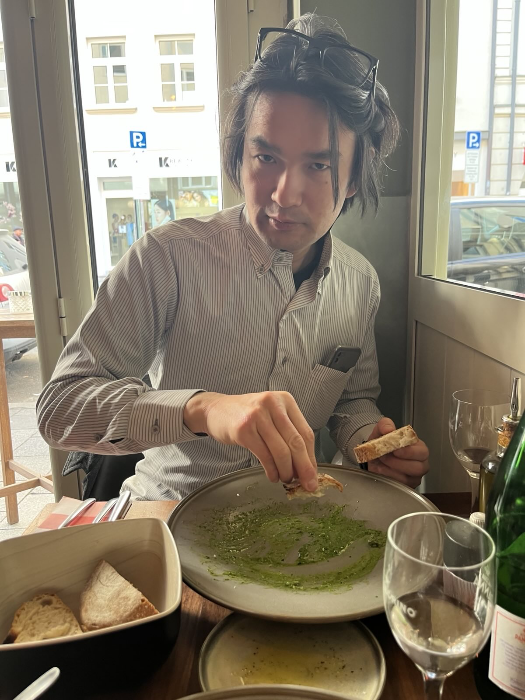

Dipartimento di Matematica,
Università di Roma "Tor Vergata", Raum 1122
e-mail: hoyt at_mark mat.uniroma2.it
OpenPGP public key

Ich bin ein Mathematiker bei Università di Roma "Tor Vergata".
Ich interessiere mich für Operatoralgebren, Darstellungstheorie und Quantum integrabele Systeme
im Zusammenhang mit algebraischer Quantenfeldtheorie (AQFT).
Meine neuesten Arbeite richten auf Konstruktion von Haag-Kaslter Netze.
Mein bisher bester Artikel ist dieser,
in dem ich wechselwirkende zweidimensionale Haag-Kastler Netze "ohne Vorgabe" konstruiert habe.
Hier ist eine Pressmitteilung
geschrieben von Henning Rehren
über mein Forschungsprojekt gegen 2013.
Ich habe ein Forschungsprojekt durchgeführt,
das vom Programm "Rita Levi Moltalcini" gefördert war
(Universitäatsnachrichten).
Siehe auch meinen Beitrag
zum ICMP12 proceedings.
Ich helfe bei mathlib in Lean mit, eine Bibliothek von mathemathschen Definitionen und Ergebnisse in einer formellen Sprache. Ich hoffe, Sachen, die in Verbindung mit QFT stehen, hinzufügen, so wie die Spectraltheorie, Operatoralgebren, unitäre Darstellungen von Lie Gruppen, Funktionentheorie mit mehren Variablen, (operator-wartige) Distributionen, Vertexoperatoralgebren, und so weiter. Jeder Beitrage ist viel wertgeschätzt!